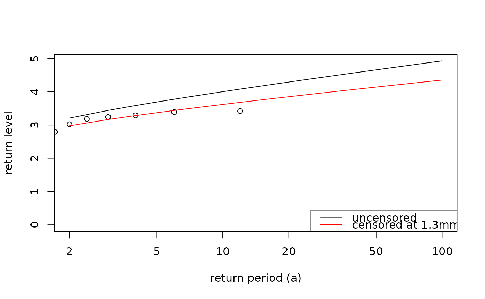

Weibull tail test
weibull_tail_test.RdThis functions provides a way to test if observed rainfall maxima from a data series are likely samples from a parent distribution with a Weibull tail. The concept and the code is based on the paper Marra F, W Amponsah, SM Papalexiou, 2023. Non-asymptotic Weibull tails explain the statistics of extreme daily precipitation. Adv. Water Resour., 173, 104388, https://doi.org/10.1016/j.advwatres.2023.104388. They also provide the corresponding Matlab code (https://zenodo.org/records/7234708).
Arguments
- data
A data.frame
- threshold
A numeric that is used to define wet days as values > threshold.
- mon
This month defines the block whose maxima will be tested. The block goes from month-YYYY-1 to month-YYYY.
- cens_quant
The quantile at which the tail test should be performed. Must be a single numeric.
- p_test
A numeric defining the 1 - p_test confidence band. This function tests the ratio of observed block maxima below p_test and above 1 - p_test. See details.
- R
The number of synthetic samples.
Value
A tibble with the test outcome and other useful results:
- is_rejected
outcome of the test (TRUE means that the assumption of Weibull tails for the given left-censoring threshold is rejected).
- p_out
fraction of block maxima outside of the Y = 1 - p_out confidence interval
- p_hi
fraction of block maxima above the Y = 1 - p_out confidence interval
- p_lo
fraction of block maxima below the Y = 1 - p_out confidence interval
- scale
scale parameter of the Weibull distribution describing the non-censored samples
- shape
shape parameter of the Weibull distribution describing the non-censored samples
- quant
the quantile used as left-censoring threshold
Details
Null-Hyothesis: block maxima are samples from a parent distribution with Weibull tail (tail defined by a given left-censoring threshold). If the fraction of observed block maxima outside of the interval defined by p_test is larger than p_test the null hypothesis is rejected.
Examples
data("dailyrainfall")
weibull_tail_test(dailyrainfall)
#> # A tibble: 1 × 8
#> is_rejected p_out p_hi p_lo scale shape thresh quant
#> <lgl> <dbl> <dbl> <dbl> <dbl> <dbl> <dbl> <dbl>
#> 1 FALSE 0.0667 0 0.0667 96.0 0.912 234 0.9
# generate data
set.seed(123)
sample_dates <- seq.Date(from = as.Date("2000-01-01"), to = as.Date("2010-12-31"), by = 1)
sample_data <- data.frame(dates = sample_dates, val = sample(rnorm(length(sample_dates))))
d <- sample_data |>
filter(val >= 0 & !is.na(val))
fit_uncensored <- fsmev(d)
# censor the data
thresholds <- c(seq(0.1, 0.9, 0.1), 0.95)
p_test <- 0.1
res <- lapply(thresholds, function(x) {
weibull_tail_test(d, cens_quant = x, p_test = p_test, R = 200)
})
res <- do.call(rbind, res)
# find the optimal left-censoring threshold
cens <- censored_weibull_fit(res, thresholds)
cens$optimal_threshold
#> [1] 1.280674
cens$quantile
#> [1] 0.8
# plot return levels censored vs uncensored
rp <- c(2:100)
rl_uncensored <- return.levels.mev(fit_uncensored, return.periods = rp)$rl
rl_censored <- qmev(1 - 1/rp, cens$shape, cens$scale, fit_uncensored$n)
plot(rp, rl_uncensored, type = "l", log = "x", ylim = c(0, max(rl_censored, rl_uncensored)),
ylab = "return level", xlab = "return period (a)")
points(pp.weibull(fit_uncensored$maxima), sort(fit_uncensored$maxima))
lines(rp, rl_censored, type = "l", col = "red")
legend("bottomright", legend = c("uncensored",
paste0("censored at ", round(cens$optimal_threshold, 1), "mm")),
col = c("black", "red"), lty = c(1, 1))
